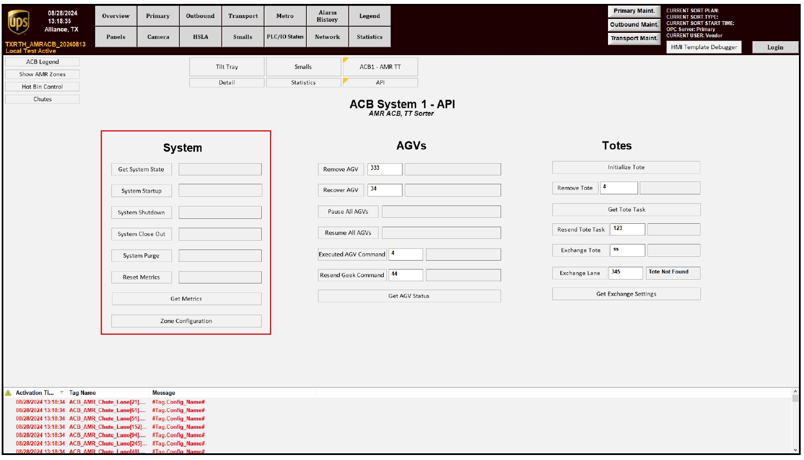

| Procedure ID | proc_stop_optsweepsystem_via_system_hmi_api_screen_system_shutdown_v1 |
|---|---|
| Title | Stop the OptiSweep System Using the System HMI API Screen (SYSTEM SHUTDOWN) |
| Procedure Type | operation |
| Primary Role | operator |
| Support Safe | Yes |
| Capability Tags | fleet_system_status |
| Access Surface | tipper_hmi |
| Audience Roles | operator |
| Failure Pattern Tags | None |
| Validation Status | needs_sme_review |
| Merge Status | source_finalized |
Use the system HMI API screen to initiate SYSTEM SHUTDOWN and confirm the AGVs transition to a shutdown queue between sorts.
When you need to stop the OptiSweep system between sorts so AGVs move to a shutdown queue.

Responsible role: operator
Instruction:
On the system HMI, navigate to the system API screen.
Expected result:
The system API screen is open and ready for the SYSTEM SHUTDOWN action.
Responsible role: operator
Instruction:
Press SYSTEM SHUTDOWN on the system API screen.
Expected result:
SYSTEM SHUTDOWN is initiated.
Responsible role: operator
Instruction:
Observe that the AGVs go to a shutdown queue after SYSTEM SHUTDOWN.
Expected result:
AGVs are in a shutdown queue state.
Stop or Escalate If: